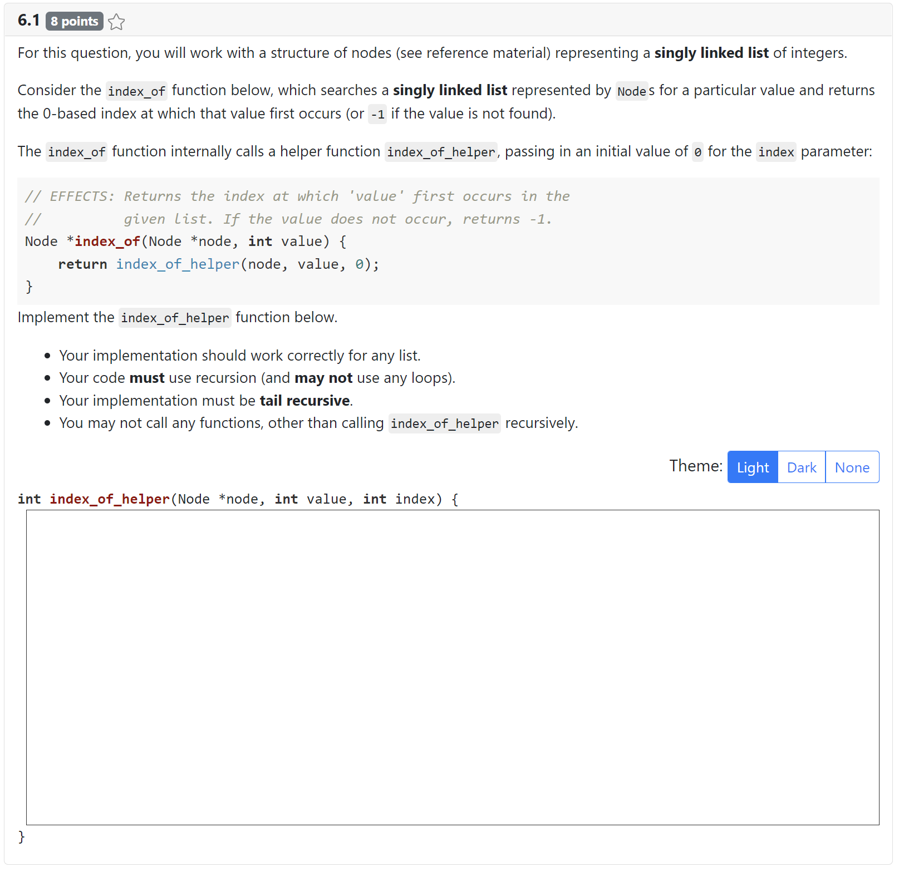

A submission for a code editor response is simply a string with whatever content was in the code editor box. The submission may also be the symbol BLANK_SUBMISSION if the contents of the code editor box were entirely blank or consisted of only whitespace. Note that unmodified starter code would not be considered blank.
Generated using TypeDoc
Code Editor Response Element Specification
A code editor response element facilitates open-ended code-writing questions. Here's an example:

Syntax Highlighting and Language Support
You'll want to specify the language you're working with in two places.
code_language: For highlighting in the header/footer, specify the alias for any highlightjs supported language. For no highlighting, specify"text".codemirror_mime_type: For syntax highlighting and language support within the code editor itself, specify one of the MIME types supported by CodeMirror (click into the language you want, then scroll to the bottom to see the relevant MIME type). For no highlighting, specify"null".Header, Footer, Starter Code
The
headerandfooteroptions specify code above/below the editor. Students can't edit the header/footer code. Thestarteroptions specifies code to initially populate the code editor, which students can change.Code Editor Submissions
A submission for an code editor response is simply a string with whatever content was in the code editor box. See
CodeEditorSubmissionfor details.